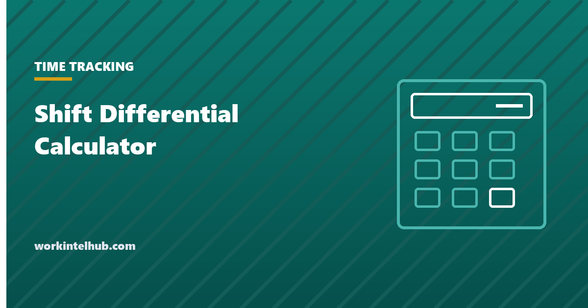

Shift Differential Calculator

A shift differential is extra pay for working hours that are harder to staff: evenings, nights, weekends and holidays. It is set by the employer, not by law, and is expressed either as a percentage of the base rate or as a flat amount per hour. The calculation is simple until overtime enters, at which point it is the single most common shift-pay error: the overtime premium must be calculated on a regular rate that includes the differential, not on the base rate, and employers that base it on the base rate underpay every week.
The calculator handles both the differential and the blended overtime. The rest of the page covers typical percentages, the overtime rule in detail, how the differential interacts with other pay, and the policy points that keep it clean.
Shift differential calculator
Overtime is calculated on the regular rate, which under 29 CFR 778.207 must include the differential, so the overtime premium is worked out on the blended rate rather than the base. Nothing typed here leaves your browser.
Typical differentials
| Shift | Typical differential | Notes |
|---|---|---|
| Evening (roughly 3 p.m. to 11 p.m.) | 5 to 10 per cent, or $1 to $2 an hour | Manufacturing and healthcare most commonly |
| Night (roughly 11 p.m. to 7 a.m.) | 10 to 20 per cent, or $2 to $5 an hour | Hospitals often pay the higher end; nursing night differentials of $4 to $8 are common in urban markets |
| Weekend | 5 to 15 per cent, or $1 to $3 an hour | Often stacked with the night differential |
| Holiday | Time and a half, or double time | Usually structured as holiday premium rather than differential; see the holiday pay calculator |
| Split shift | Flat premium per split, $5 to $20, or one hour's pay | California requires a split-shift premium for low-wage workers; see the split shift guide |
| On-call | Flat daily or weekly stipend, plus call-in minimums | Different rules apply to whether on-call time is hours worked |
Around 15 per cent of US wage and salary workers work a shift outside regular daytime hours according to Bureau of Labor Statistics data, with the share highest in healthcare, protective services, food service and manufacturing. The differential exists because those shifts are otherwise hard to fill: it is a market price, not an entitlement, and the glossary entry has the short definition.
The overtime rule
Under the Fair Labor Standards Act, overtime is one and a half times the regular rate, and the regular rate is all remuneration for employment divided by hours worked, with a short list of exclusions. Shift differentials are not on the list. 29 CFR 778.207 states that extra compensation for night or shift work is part of the regular rate and cannot be credited toward overtime, unlike a true premium of at least time and a half for hours over eight or over forty.
In practice: an employee at $20 who works 20 regular hours and 24 night hours at a $2 differential in one workweek has straight-time pay of $928 for 44 hours, a regular rate of $21.09, and is owed an overtime premium of half that rate, $10.55, on 4 hours, or $42.18. Basing the premium on the $20 base rate gives $40.00, an underpayment of $2.18 that week and, across a workforce and a two- or three-year look-back, the kind of figure that appears in wage-and-hour settlements. Payroll systems handle this correctly if the differential is coded as earnings included in the regular rate; the error usually comes from coding it as a separate, excluded payment. The overtime calculator works the general blended-rate case.
Policy points
- Define the hours. "Night shift" means a stated window, and the differential applies to the hours actually worked in it, or to the whole shift if the majority falls in the window; say which.
- Percentage or flat. A percentage scales with pay and preserves the ratio after raises; a flat amount is simpler and treats all workers on the shift alike. Most hourly workforces use flat amounts; salaried non-exempt roles usually use percentages.
- Stacking. State whether weekend and night differentials combine, and whether the differential is paid on PTO taken for a scheduled differential shift (often yes, since the employee would have earned it).
- Exempt employees. May receive differentials without affecting the exemption, since additional pay on top of the guaranteed salary is permitted.
- Payroll coding. Included in the regular rate for overtime, always. This is the line to check in the system.
- Review annually. If night shifts are chronically understaffed, the differential is below market. The rotating shift guide covers the schedule side; the work schedule template the roster.
Key takeaways
- A shift differential is employer-set extra pay for evening, night, weekend or holiday hours, as a percentage of base or a flat amount per hour.
- Typical ranges: 5 to 10 per cent for evenings, 10 to 20 per cent for nights, 5 to 15 per cent for weekends; hospital night differentials run higher.
- The differential must be included in the regular rate for overtime (29 CFR 778.207); basing overtime on the base rate underpays.
- Define the hours, choose percentage or flat, state whether differentials stack and whether they are paid on PTO.
- Code the differential as regular-rate earnings in payroll; the error almost always comes from coding it as excluded.
Frequently asked questions
What is a shift differential?
Extra pay for working hours that are harder to staff, typically evenings, nights, weekends and holidays. It is set by the employer as a percentage of the base rate or a flat amount per hour; no federal or state law requires it, though some union contracts and public-sector pay scales do.
How is shift differential calculated?
Percentage: base rate times the percentage, added to the base for each differential hour. Flat: the amount added to the base for each differential hour. At $20 base and a 10 per cent differential, night hours pay $22. The calculator on this page also blends the rate for overtime.
What is a typical shift differential?
Five to 10 per cent, or $1 to $2 an hour, for evening shifts; 10 to 20 per cent, or $2 to $5, for night shifts; 5 to 15 per cent for weekends. Hospitals commonly pay nursing night differentials of $4 to $8 an hour in urban markets.
Does shift differential count toward overtime?
Yes. Under 29 CFR 778.207 shift differentials are part of the regular rate on which overtime is calculated and cannot be credited against overtime. The overtime premium is half the blended regular rate, not half the base rate, for each hour over 40 in the workweek.
Is shift differential paid on PTO or holidays?
Only if policy says so. Many employers pay the differential on PTO taken for a scheduled differential shift, on the reasoning that the employee would have earned it. Holiday premium pay is usually a separate rule.
Can salaried exempt employees receive a shift differential?
Yes. Additional compensation on top of the guaranteed salary does not affect the exemption. Non-exempt salaried employees receive the differential and it enters their regular rate for overtime like any hourly employee's.